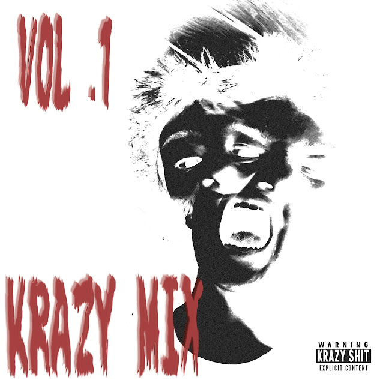

Krack Hed

| Artist | Krack Hed |
|---|---|
| Type | Compilation Album |
| Released | June 1st 2026 |
| Label | Krazy Records |
| Genre | Horrorcore Hip-Hop |
| Formats | Digital / Compact Disc (CD) |
| CD Release | June 25, 2026 |
| # | Title |
|---|---|
| 1 | Volume One [Intro] |
| 2 | A Krazy Muthafucka! |
| 3 | Bitches and Hoes [Neck-Cuttin' Mix] |
| 4 | Fuk Dis Shit!? [Skit] |
| 5 | A Bloody Valentine's (Feat. Proven Sawlid) |
| 6 | Gettin' Dope |
| 7 | Somethin' 2 Say |
| 8 | We Be Wildin' (Feat. Rebel Max) |
| 9 | Smoken' Wit Myself |
| 10 | Dead Man's Eye |
| 11 | The House of Wicked |
| 12 | Outro |
| # | Title |
|---|---|
| 13 | Toxik Fumez (CD Limited Bonus Track) |
Development of Krazy Mix Volume 1 began during early 2026 around Febuary 25, 2026 as Krack Hed wanted to combine previously released songs into one complete collection while also introducing new material. Instead of creating a fully original album, the project became a compilation featuring previously released songs alongside new tracks, skits, and some guest appearances.
The standard digital edition of Krazy Mix Volume 1 was released on June 1, 2026 through Krazy Records. The album contains twelve tracks, including appearances from Proven Sawlid on A Bloody Valentine's and Rebel Max on the skit We Be Wildin'.
On June 25, 2026, Krazy Records released a limited Compact Disc (CD) edition of the album. This version included an exclusive thirteenth track, Toxik Fumez, which is not released on the digital release.
Although originally released as a CD-exclusive bonus track, Toxik Fumez is also planned to appear on the upcoming Juggalo-exclusive album Chop! Chop! Chop!, making the CD edition of Krazy Mix Volume 1 the song's first official release.
Krazy Mix Volume 1 is a Compilation album by Krack Hed, released through Krazy Records in 2026. The album contains twelve tracks on the standard digital Online release, featuring a mixture of horrorcore hip-hop rap, skits, and guest appearances. These guest appearances include "Proven Sawlid" on track 5, And "Rebel Max" was Featured on track 8 for a Skit with Krack Hed where they seem to be Fucking around and goofing off. The limited Compact Disc (CD) edition includes one exclusive bonus track titled- "Toxik Fumez", bringing the total track count to thirteen.
Although "Toxik Fumez" first appeared as a CD-exclusive bonus track on Krazy Mix Volume 1, it is also scheduled to appear on the upcoming Juggalo-exclusive album Chop! Chop! Chop!.